How to Give
Inspiring Teachers - Changing Lives
We would be delighted if you would make a donation to The Fuchs Foundation or organise a charity event in partnership with us.
Donations can be made through JustGiving. This allows us to reclaim gift aid if you are a UK taxpayer.
Alternatively, donations may be sent to:
The Fuchs Foundation
The Elwells
Bennetts Hill
Dunton Bassett
Leicestershire
LE17 5JJ
T: 01455 202 207
E: info@fuchsfoundation.org
Watercolour Painting
‘Antarctic Camp’ by Peter Welton is available in two sizes:
- 12" x 17" mounted, unframed: £60
- 16" x 23" mounted, unframed: £90
Postage extra.
Greetings Cards
The Foundation offers ten different cards featuring penguin and seal photography by trustee Peter Fuchs from Antarctic visits. Cards are blank inside for multiple uses.
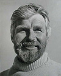
Postcard of Sir Vivian Fuchs at the South Pole, January 1958 - £1.00
Penguin Cards - £1.00 each
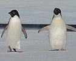
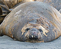
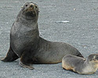
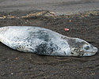
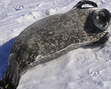
1. Juvenile King Penguin, Salisbury Plain, South Georgia
2. King Penguins, Salisbury Plain, South Georgia
3. King Penguin Colony, Salisbury Plain, South Georgia
4. Emperor Penguin, Ross Island & Adelie Penguins, Cape Royds, Ross Island
5. Pair of Adelie Penguins at Cape Royds, McMurdo Sound
Seal Cards - £1.00 each
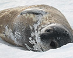
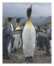
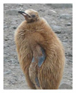
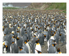
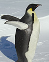
1. Fur seal and pup, Fortuna Bay, South Georgia
2. Elephant Seal, Gold Harbour, South Georgia
3. Weddell Seal pup 1, Hutton Cliffs, Ross Island
4. Leopard Seal, Deception Island
5. Weddell Seal pup 2, Hutton Cliffs, Ross Island
All photography by trustee P.E.K. Fuchs.
Postage charged separately.